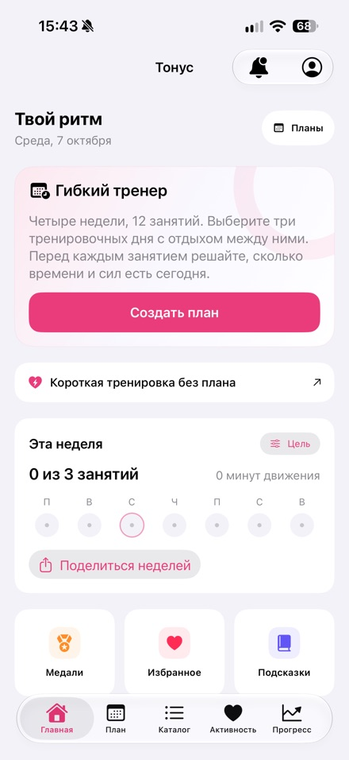
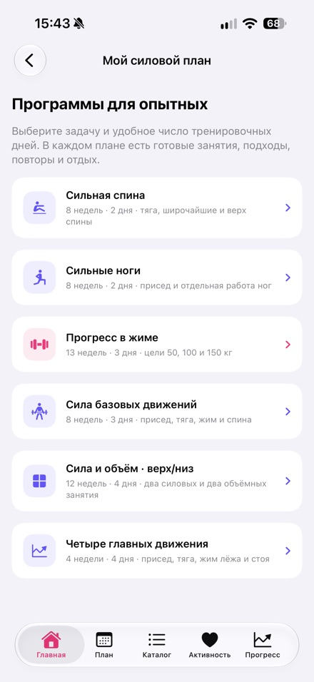
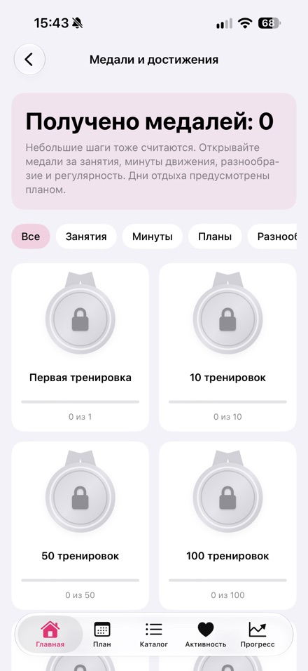

Автор: Никита Ревин, разработчик Тонуса. Обновлено 16 октября 2026 года для опубликованной версии 1.4.
Тонус — бесплатное приложение тренировок для iPhone. В нём есть короткие домашние занятия, гибкий план и шесть программ для зала. Регистрация и подписка не нужны.
Материалы для редакций
Сведения о приложении, иконка и три снимка опубликованной версии.
Скачать материалы (.zip)Tonus 1.4
- iPhone с iOS 17 или новее
- Бесплатный доступ без регистрации, подписки и встроенных покупок
- Домашние занятия на 5, 10 или 20 минут, варианты без прыжков, стоя и без оборудования
- Гибкий план из 12 занятий в выбранные дни; пропущенные занятия переносятся
- Шесть программ для зала, подсказки по технике, таймеры и учёт прогресса
- Apple Health подключается по желанию; история занятий сохраняется локально
- Планы и текстовые инструкции работают без интернета; онлайн-видео требуют подключения
- 60 упражнений с видео; внешние видеоплатформы могут показывать собственную рекламу
- Интерфейс доступен на русском языке
Снимки опубликованной версии 1.4 из App Store



Обращения об обзорах
Nikita Revin · nik007rev@gmail.com
Тонус не оказывает медицинскую помощь. При боли или плохом самочувствии остановитесь. Если есть ограничения по здоровью, обсудите занятия с квалифицированным специалистом.
Скачать Тонус